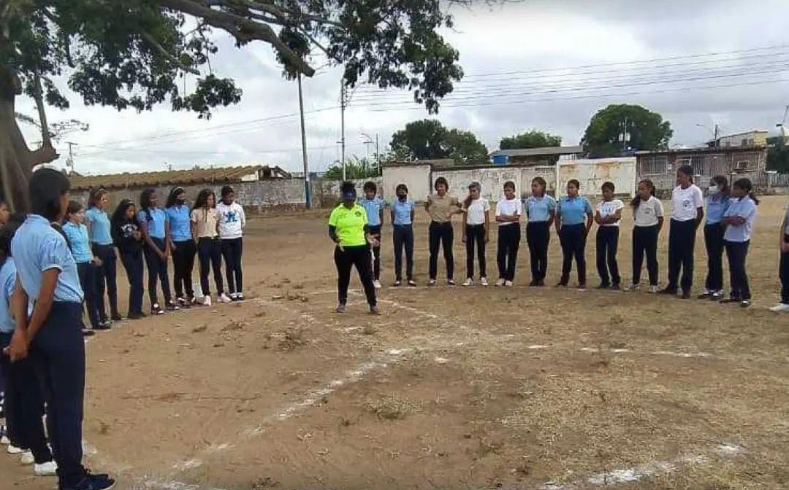
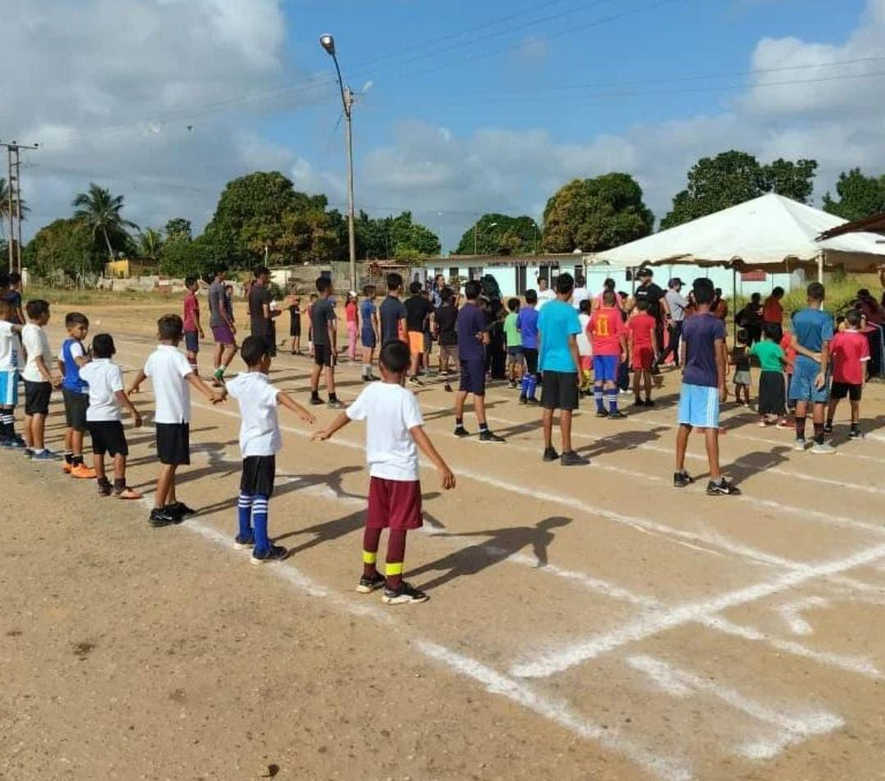

EVENTOS
Aquí presentamos los sucesos más destacados que han tenido lugar en los últimos meses en la ciudad de El Tigre.
-

Entrenamientos de atletismo.
En El Tigre, se llevan a cabo entrenamientos de atletismo para todas las categorías en la Av. Peñalver, de lunes a viernes de 3:00 pm a 5:30 pm. La entrenadora encargada es Rosa Rodríguez, con amplia experiencia en formación de atletas. La ubicación de los entrenamientos es en la pista sintética Juan y Rosa Facendo. Para mayor información, se puede contactar a la entrenadora al 04248099781.
-

Clínica de Kickingball en la Unidad Educativa Rojas Paúl.
La Unidad Educativa Rojas Paúl llevó a cabo una clínica de kickingball para estudiantes de 13 a 16 años, con el fin de captar nuevos talentos para la selección de los próximos juegos estadales. La clínica ofreció una capacitación completa sobre las técnicas del juego y brindó consejos para mejorar el rendimiento en el campo. Los estudiantes demostraron entusiasmo y habilidad, y la institución se enorgullece de haber brindado esta oportunidad. El kickingball es un deporte emocionante que fomenta el trabajo en equipo y la disciplina en los jóvenes.
-

Programa «Mi Deporte» llega a los sectores populares de El Tigre.
En el sector La Pradera, se llevó a cabo una actividad física, recreativa organizada por el programa "Mi Deporte" del Instituto del Deporte y Recreación Simón Rodríguez, siguiendo las políticas públicas sociales del alcalde Ernesto Paraqueima. La actividad incluyó acondicionamiento físico y actividades deportivas como boxeo, futsal y atletismo de 60 metros, así como bailo-terapia. Participaron 106 niños, 50 jóvenes y 90 adultos, promoviendo la actividad física y el bienestar en los ciudadanos.